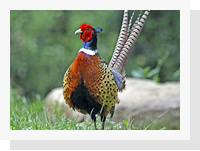
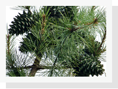
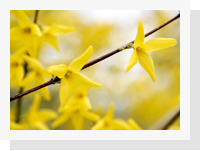

북쪽으로는 백두대간의 최고봉인 화악산이 진산(鎭山)이 되어 촛대봉, 매봉, 국망봉, 강씨봉, 명지산, 수덕산, 계관산을 거느리며,
해발 700∼800m의 크고 작은 봉우리들을 끼고 웅장한 맥을 이루고 있다.
이러한 산들의 계곡을 따라 흐르며 이어지는 가평천과 조종천의 수많은 지류들은 모두 북한강으로 유입되어 흐른다.
남쪽으로는 중미산, 화야산, 장락산이 산맥을 이루어 용문산으로 이어지고, 서쪽으로는 주금산, 축령산 등이 끝없는 산맥을 이어 나간다.
지역의 경계를 보면 동쪽으로는 강원도 춘천시와 홍천군이 맞닿아 있고, 서쪽으로는 남양주시, 남쪽으로는 양평군과, 북쪽으로는 포천시, 화천군과 경계를 이루고 있으며,
한반도의 가장 중앙에 위치하고 있는 서울과 춘천과의 철도, 도로 교통의 요지로서 산과 강이 어우러진 수도권 최고의 휴식처이다.
강을 안고 산으로 둘러싸인 가평군은 이미 구석기시대 이전부터 사람이 살았던 것으로 추측되는 자취를 도처에서 찾아볼 수 있다.
|  |  |  | ||
|---|---|---|---|---|
| 심볼마크 | 캐릭터 | 가평군조 꿩 | 가평군목 잣나무 | 가평군목 개나리 |